Pentagrama inferior transportado a Sol mayor
Esta página usa recortes reales del pentagrama grave del PDF y genera debajo una versión visual transportada. La capa musical se desplaza un grado de pentagrama hacia arriba, equivalente a subir la línea un tono.
Verificación y resultado
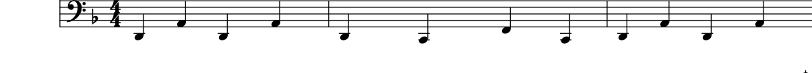
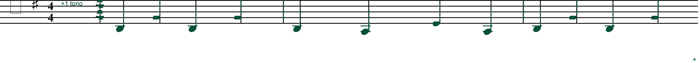
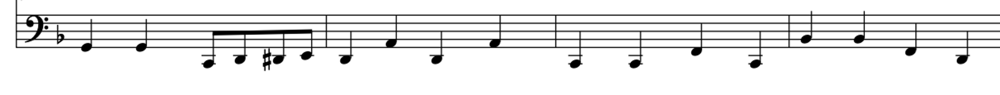
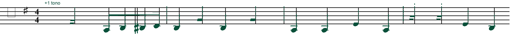
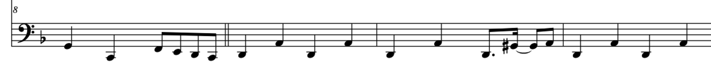
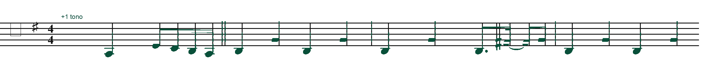
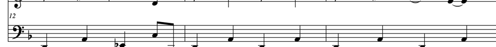
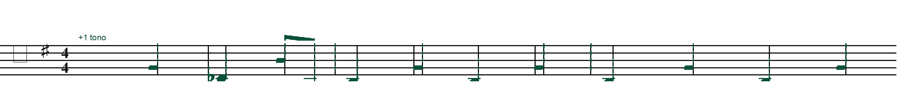
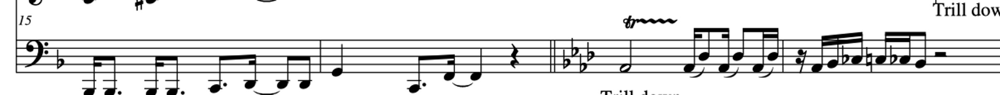
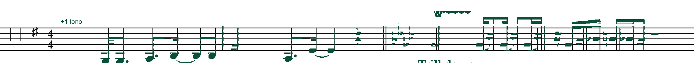
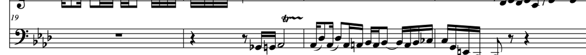
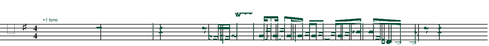
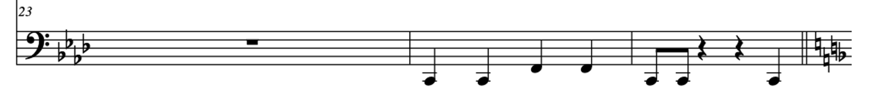
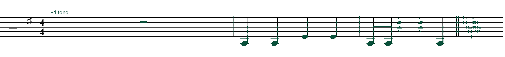
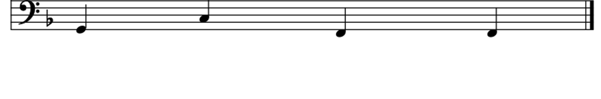
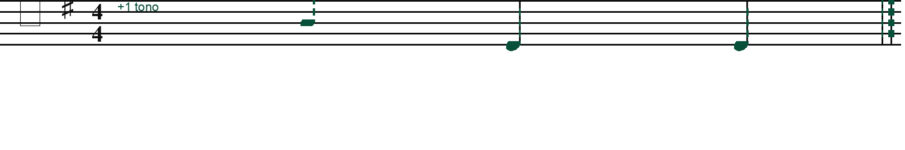
Cómo se verificó
Las filas originales salen de las páginas renderizadas del PDF y contienen solo el pentagrama inferior.
La capa de notas, plicas, barras y alteraciones se desplazó medio espacio de línea hacia arriba: un grado de pentagrama, equivalente a +1 tono en este caso.
Esto es una edición visual verificable desde la imagen original. Para una partitura editorial perfecta conviene rehacerla en MusicXML/MuseScore desde una transcripción completa.